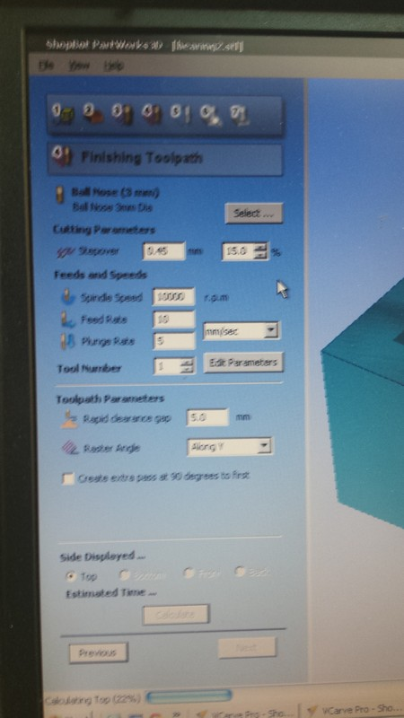
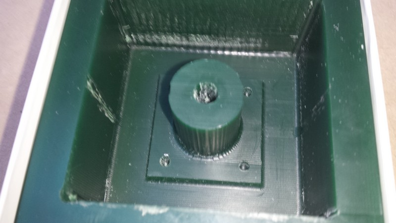

Molding and Casting
This week assignment is to make the mold and cast of a 3d design using a CNC machine and a piece of CNC wax and some resin.
We went in some trouble with the little CNC machine (software and hardware problems) so I decide to experiment something i see some time ago, and i have to do this at home so i make something really simple but fun.
I try to make a mold using oogoo the diy version of the Sugru, a silicon based material who will dry really fast and have the strength and characteristics of the silicon.
HERE you can find where i take the idea and a starting recipe
The recipe to make the Oogoo is acetic silicon ( important!!! to take the acetic one and not the acrilic) and corn starch.
The corn starch is used to dry up the acetic acid in the silicon and make it dry a lot faster than normal.
I used an out of date corn starch so I didn't waste food!!

the initial quantity are 50% and 50%.
first you have to blend the 2 component using something and make sure the compost take a not really sticky aspect.
When all take a compact look you can go with hands and mix it adding the starch to make it less sticky as you want ( for molding is better a little bit less sticky).

I design and print at home a simple 3d object with my nickname "ZIMO" with tinkercad and down there you can see it and download it.

I used some glycerine hands cream to make the Oogoo don't stick to the 3d printed object and spread it with a brush.
I press the Oogoo around the front face of the 3d printed object and make sure all is really well coated of it.

I let it dry all the night (it is really not necessary because it take like 3 hours to completely dry but I have to time so I wait).
Using careful I separate the 2 pieces.

I use a little bit of starch to make the mold not stick.
I take some IKEA candle and melt the wax with a lighter gently deposit the wax in the mold making sure all the fissure got fully filled.
I let it cool at ambient temperature and after I make a rapid passage ( 5-6 minutes) in the freezer to make the all wax become really strong.
making attention i take out the wax stamp out of the mold ( it is really fragile).

 All can I tell is NOT BAD to be an home made mold and casting...
All can I tell is NOT BAD to be an home made mold and casting...
i also made the "standard" molding and casting, in the machining wax.
I design a linear dry bearing to try some composite resin and for test what material is have less friction.
Follow the step in the photo


Catalyst at 5% in weight, 30 minutes pot life
let it dry for a night

50% 50% in volume 7 minutes pot life


30 minutes dry time
the standard resin not charged of any metal powder or other material is really heavy in friction, the static friction is really strong so is not really usefull, maybe with some other add on it wil be better.
Download Rhino file of the linear bearing project for molding and casting